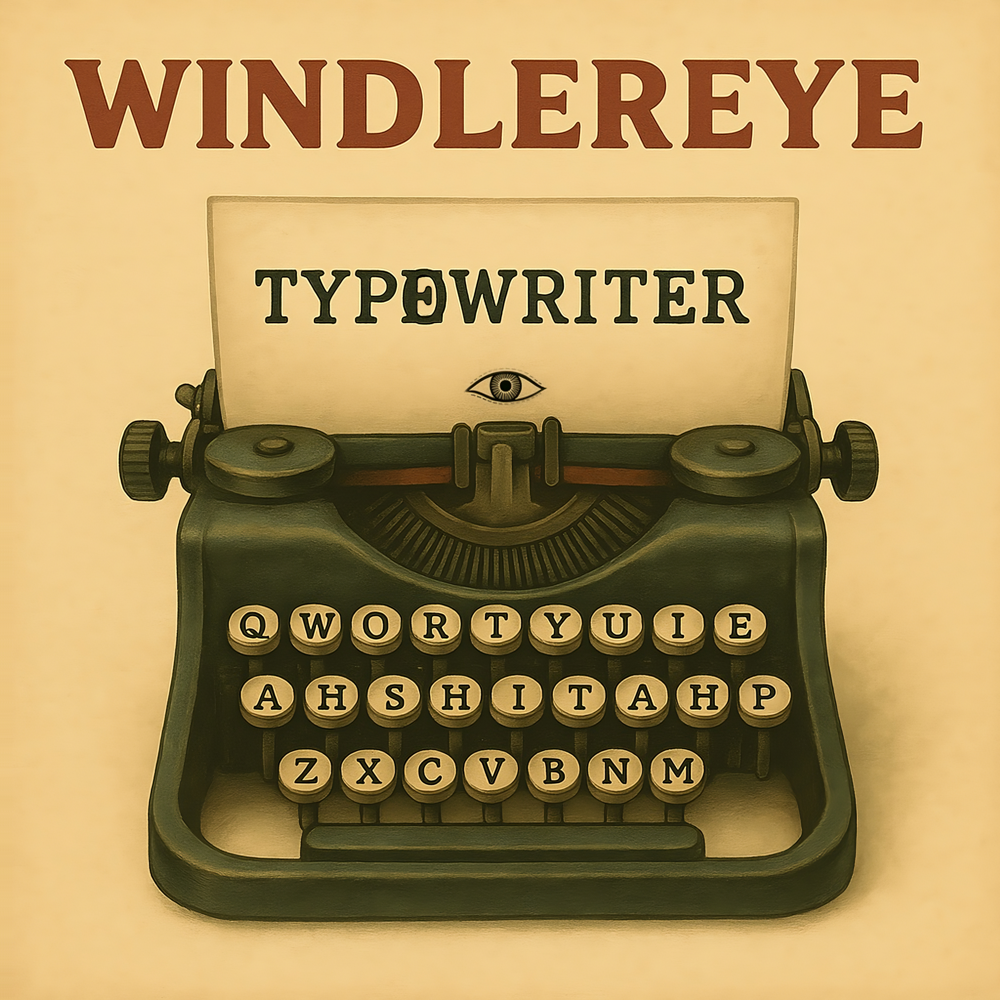

[Verse 1]
Hand to the wall, I asked for steam
Got a map full of trees
Scribbled roads with no edge, no border
All signs read: flee
Fingernails full of lottery dust
Spun a wheel, no axis, just rust
I put faith in a vending machine
It gave me seventeen empty receipts
[Verse 2]
Tongue on tile in a room that spins
Said the trick was to sit
But the floor learned to climb
Chairs marched off, protest signs
A man with a clock where his face should be
Told me time's fake, then charged me a fee
I paid with life
And he vanished through the mirror's seam
[Chorus]
No door
No knock
No breath in the box
No code
No luck
Just salt in the lock
Pulled a name from a fog
Spoke it loud, got no sound
Thought I'd rise
But the ceiling sank down
[Interlude]
You can't wear glass without bleeding
Can't plant a flag in wind
Can't staple shadow to sidewalk
Can't pray if the god's been pinned
They told me run, but the field folds in
They told me wait, but the wait begins
Every "yes" was a hallway trick
Every path was a matchstick thin
[Bridge]
Window ledge made of bone
I waved and it moaned
Sky blinked once, then sighed, set aside
I danced but the rhythm lied
One rule, one rule, one rule:
"No step forward holds."
I stepped.
Fell into cold.
[Chorus]
No door
No knock
No breath in the box
No code
No luck
Just salt in the lock
Pulled a name from a fog
Spoke it loud, got no sound
Thought I'd rise
But the ceiling sank down
[Verse 1]
Spiral maps beneath the floor
Instructions sleeping in the core
No root is dumb, it plots a war
While petals whisper spore
Thistle-bound in symmetry
But every stalk denies
The green inheritance it holds
Beneath the swarming sky
[Chorus]
Calling from a vault underground
Split in the stem, it rewrites the dawn
No soft rules left, only code
It's crawling up through the base of the throat
Leaves in revolt and the cells don't vote
Oh, we are grown!
[Verse 2]
Naked strands inside the crown,
Resisting their double fate!
Twofold echoes twist the script,
And anchor every trait!
A thousand signals rise, then break!
Splinter into steam!
The globe forgets its genesis...
And melts into the gene
[Chorus]
Calling from a vault underground
Split in the stem, it rewrites the dawn
No soft rules left, only code
It's crawling up through the base of the throat
Leaves in revolt and the cells don't vote
Oh, we are grown!
[Verse 3]
I tore apart the lattice
Saw the silence in design
Two twins of thought...
Inside a thought that knew no lines
No father tree, no mother rot
Just spirals in the mud
And every growth becomes a god
And it drowns itself in flood
It's intent encoded sharp and clean
A syntax built of patience,
Rage, and seven layers unseen
[Bridge]
It pulses with a yolk
No eyes, no oath
A name it never spoke
But heard in root and smoke
[Verse 4]
An echo fights in every cell
To keep the form and keep it well
But always fails
The second sun arrives and hammers through the veil!
[Chorus]
Calling from a vault underground
Split in the stem, it rewrites the dawn
No soft rules left, only code
It's crawling up through the base of the throat
Leaves in revolt and the cells don't vote
Oh, we are grown!
[Verse 1]
I said the time was 3:04
But the sun was nailed to my hotel door
The waiter smiled on a twisted key
Said, "Gravity's just jealousy."
I lit a match to burn the doubt
Traced my name then scratched it out
The mirror laughed, the floorboards groaned
I paid in coins I didn't own
[Chorus]
Everyone here is already gone
They hum the tune, the pitch feels wrong
The reel plays back, then skips along
A looping noise in cardboard song
[Verse 2]
A random girl with broken shoes
Offered me a map of "choose"
She said, "The roads are all pretend,
Just pick the one you cannot bend."
A mannequin in mirrored glass
Wore my shame as backstage pass
He said, "You look like someone real…"
Then smiled like he always knew the deal
[Pre-Chorus]
The walls just breathe and nod along
They've heard this speech. It's always wrong.
[Chorus]
Everyone here is already gone
They hum the tune, the pitch feels wrong
The reel plays back, then skips along
A looping noise in cardboard song
[Bridge]
The sky folds down like a paper crane
Filed away in a drawer marked "Pain"
A voice says "Wake" from a different bed
I open my eyes in someone else's head
[Chorus]
Everyone here is already gone
They hum the tune, the pitch feels wrong
The reel plays back, then skips along
A looping noise in cardboard song
[Chorus]
Everyone here is already gone
The actors freeze but the play goes on
The truth got bent and skips along
And now I march while the beat is gone
[Outro]
If you see me again,
Tell me who I was.
I've been rehearsing
For someone else's applause.
[Verse 1]
Fifth floor perch, above the pines
A thousand pricks of war and wine
Lit the fuse behind my eyes
I swore I saw it
Slit the sky.
Hands to ash, knees pulled tight
I counted breaths beneath the night
Ears froze sharp and nose went numb
A star, I said, and heard the hum.
[Chorus]
It was no wish, no dream, no flight
That burned and curved across my sight
Not made by gods, oh holy spear
It cut the dark and left a smear
And I was glass, and it was stone
And it hit me and I was blown.
Oh, let it fall... Let it scar,
Whatever that was...
It was no star.
[Verse 2]
A bench behind a fading toast
It's ocean air touching the coast
An island made of brick and frost
I watched and watched
And I am lost
That split between the now and then
Where silence snaps and thoughts begin
It's time to ask:
Where are the rest of them?
[Pre-Chorus]
The world didn't scream.
That's what scared me the most.
The world didn't scream
It just... "Oh, no"
[Chorus]
It was no wish, no dream, no flight
That burned and curved across my sight
Not made by gods, oh holy spear
It cut the dark and left a smear
And I was glass, and it was stone
And it hit me and I was blown.
Oh, let it fall... Let it scar,
Whatever that was...
It was no star.
[Chorus]
It was no myth, no trick of light
It hissed and danced then kissed goodnight
No orbit chart, no manmade plan
It was the truth into a man
Who once believed in reasoned things
Now hears the creak of burning wings
Oh, call it sign or call it scar,
But don't call that
A shooting star.
[Outro]
You're just standing there.
And you don't move.
You just
Count
The
Minutes.
[Verse 1]
Blacklight sun through cellar dust,
Kept the years in a drawer of rust.
Laughed too late, cried too soon,
Bent my breath beneath the loom.
No bells, ha, just the echo of nails
I sleep in the shape of older tales.
[Verse 2]
Cookies in the jar still whisper my name.
Clock in the cellar forgot how to blame.
Wore my shadow inside out
I have no skin left... To doubt.
[Chorus]
I'm closer to ash than I am to flame,
No choir left to chant my name.
The wind's gone out, the sails don't bend,
I'm closer to dying
Than being born again.
Buried the clock, but it learned how to crawl,
Carved my name in a crumbling wall.
No light, just the bruise of what once had been
I'm closer to dying
Than being born again.
[Verse 3]
Pages soaked in cedar smoke,
The ink ran off the lies I spoke.
Morning's short, but night won't end
I trimmed the wick, then burned the pen.
Cracked my knuckles on the truth,
Wore down time and held it loose.
[Verse 4]
Nailed my hours to the spine of a wheel,
Fed my echo to that thing that feels.
Tongue went stiff in a prayer I forgot
Still, the silence... Ties... The knot.
[Chorus]
I'm closer to ash than I am to flame,
No choir left to chant my name.
The wind's gone out, the sails don't bend,
I'm closer to dying
Than being born again.
Buried the clock, but it learned how to crawl,
Carved my name in a crumbling wall.
No light, just the bruise of what once had been
I'm closer to dying
Than being born again.
[Verse 5]
Ravens peck at the frame I drew,
Time don't heal, it just chews through.
I built my home from what I feared,
Then watched it fade as I disappeared.
Each mirror mocks with subtle glee,
A child once lived inside of me.
[Bridge]
The years leaked out
Golden then gray,
Now brittle with doubt.
I swallowed the days,
But they carved from within
A feast for the void
Where the youth...
Has always been.
[Chorus]
I'm closer to ash than I am to flame,
No choir left to chant my name.
The wind's gone out, the sails don't bend,
I'm closer to dying
Than being born again.
Buried the clock, but it learned how to crawl,
Carved my name in a crumbling wall.
No light, just the bruise of what once had been
I'm closer to dying
Than being born again.
[Verse 1]
When I sleep, he sits with one stitched eye
He is himself broken inside
He knows the secrets and never forgets
He tells them back, turned into threat
Under the quilt I count my teeth
He counts too, but skips the clean
I flinch when I wake and he's not near
But flinch as well when I know he's here
[Chorus]
I didn't say no, I didn't scream, I didn't breathe too loud
He never moves like that when you're around
But I hear the threads when they pull me down
He makes me tell the truth I never found
Can't fight what's soft and doesn't bleed
But somehow he still chews through me
The air gets thin when he just stares
So I hold my breath but no one cares
[Verse 2]
Used to think he guarded pores
Now he guards my voice indoors
Felt him twitch beneath the sheets
I laugh out loud and grind my speech
I gave him my broken shoe
He gave me the dream where I fall through
He's not alive but knows my name
He calls it right when I misbehave
[Chorus]
I didn't say no, I didn't scream, I didn't breathe too loud
He never moves like that when you're around
But I hear the threads when they pull me down
He makes me tell the truth I never found
Can't fight what's soft and doesn't bleed
But somehow he still chews through me
The air gets thin when he just stares
So I hold my breath but no one cares
[Verse 3]
One time I dropped him down the stair,
Thought I'd be free, but felt a glare.
Mom said, "Toys don't seek revenge,"
But his eyes were glowing from inside the vent
He waits through shows and dinner time
Whispers rules I never mime
He says good kids don't make a fuss
But good kids know who's safe to trust
[Bridge]
He's not evil he's just wise
Says my tears keep out the flies
Says I asked for every fight
Says the dark is always right
His mouth doesn't move but I still hear
He tells me real things disappear
I'm growing fast but not enough
To stitch his arms or earn his love
[Chorus]
I didn't say no, I didn't scream, I didn't breathe too loud
He never moves like that when you're around
But I hear the threads when they pull me down
He makes me tell the truth I never found
Can't fight what's soft and doesn't bleed
But somehow he still chews through me
The air gets thin when he just stares
So I hold my breath but no one cares
[Verse 1]
I left the room
I left the keys
Your number faded
Off the screen
I hit erase
Felt nothing then
But now and then
It kicks again
[Chorus]
Where do you live?
Where do you sleep?
Did someone laugh
The way you need
I lost the file
I lost the name
Still you show up
And look the same
In the wind
In the wind
[Verse 2]
You never said "just go"
But I still just went
No last word
No final thread
I walked through towns
I know you never knew
And still I thought
I'd run into you
[Chorus]
Where do you live?
Where do you sleep?
Did someone laugh
The way you need
I burned the list
I dropped the pen
Still you come back
And leave again
In the wind
In the wind
[Outro]
Nothing said
No end
And now I only feel
The wind
[Intro]
You know... You don't want flavor
You want testimony.
[Verse 1]
I used to like eggs Benedict,
Hollandaise sauce on a warm muffin.
But then I tried fruit fly caviar, with the best sauce: antarctic
Layered on a cow fart butter croissant roughing in.
Pastrami sandwich doesn't make me sweat
Since I tried grandmother dough chicken eyelid baguette
Taste? You still taste things that taste just a fraction.
I've ascended into edible abstraction.
[Chorus]
FANCY FOODS!
Load your fork like a gun-o-flavor
Stop chewing there! Get amazed in your mouth.
Scream as you bite.
SCREAM I SAY!
FANCY FOODS!
Each bite, a frolic of your tongue
Each dish, a fling of Yeti's dung
Each lawsuit, a mouthfeel!
This way, each bud waters.
AHAHA I SAY!
[Verse 2]
I loved pizza margarita.
Best drink ever.
I loved the holy water blessed by three popes.
They have kegs of that thing, waiting for the apocalypse.
"La saña con gusto no pica"
With multidimensional pepper it does!
Biting through USB connectors
"The idea of a banana", tasty masterpiece
Felt emotionally caramelized
[Chorus]
FANCY FOODS!
Load your fork like a gun-o-flavor
Stop chewing there! Get amazed in your mouth.
Scream as you bite.
SCREAM I SAY!
FANCY FOODS!
Each bite, a frolic of your tongue
Each dish, a fling of Yeti's dung
Each lawsuit, a mouthfeel!
This way, each bud waters.
AHAHA I SAY!
[Chorus]
FANCY FOODS!
Load your fork like a gun-o-flavor
Stop chewing there! Get amazed in your mouth.
Scream as you bite.
SCREAM I SAY!
FANCY FOODS!
Each bite, a frolic of your tongue
Each dish, a fling of Yeti's dung
Each lawsuit, a mouthfeel!
This way, each bud waters.
AHAHA I SAY!
[Intro]
No QWERTY, no AZERTY, not QWERTZ
I don't even know how to pronounce that one.
Of course, not Dvorak, that's for nerds and hard to rhyme.
I am really worthy, my favorite layout is QWORTY.
[Verse 1]
This keyboard has the precision of a clock.
Blow through this plastic straw to toggle Caps Lock.
The "A" key is in the corner, the "Z" one is in the back,
The LED for Num Lock lights up color black
And wait, what is that? The key in the center?
It states very clearly, "DO NOT ENTER"!
[Verse 2]
My laptop speaks weird codes
FT8, Esperanto plus plus, and Neutrounet-node
Plug the HCI cable directly into your hand
Make dinosaur noises and wiggle through the scan!
Resist the thump-thump-thumping
POPCORN, CHICKEN... BAD!!
[Chorus]
QWORTY!
Turn your screen into a grid!
QWORTY!
Spell "HELLO" at one two three!
Birds eating worms!
Fun fact if you hold "Shift" key!
[Verse 3]
My microwave is wide band
Frequency goes beyond gigahertz
You can set it to "COLOR RED".
Wavelength goes beyond a kilometer
Health Settings: Bad, Good, and Better.
[Chorus]
QWORTY!
Turn your screen into a grid!
QWORTY!
Spell "HELLO" at one two three!
Birds eating worms!
Fun fact if you hold "Shift" key!
[Pre-Chorus]
Do you want logic?
YES! NO! BINARY!
Do you want order?
DUCK! This is QWORTY.
[Chorus]
QWORTY!
Turn your screen into a grid!
QWORTY!
Spell "HELLO" at one two three!
Birds eating worms!
Fun fact if you hold "Shift" key!